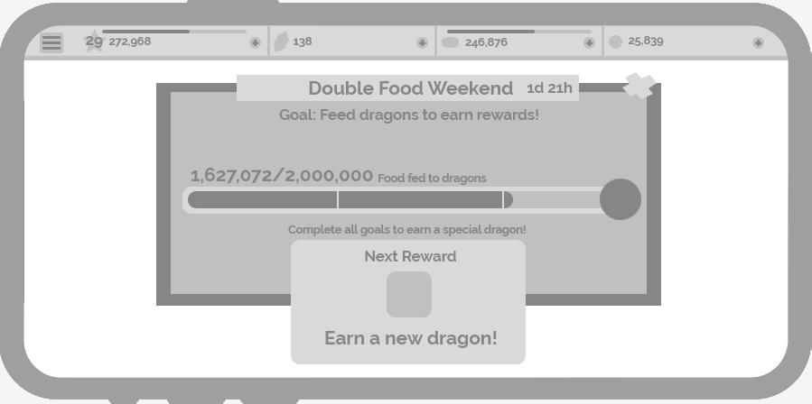
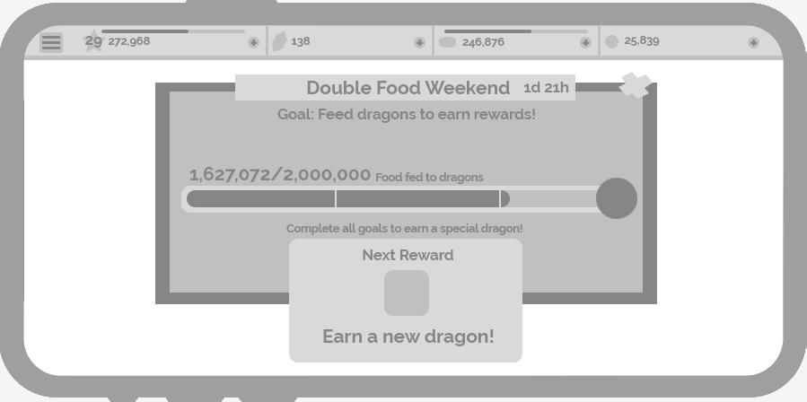
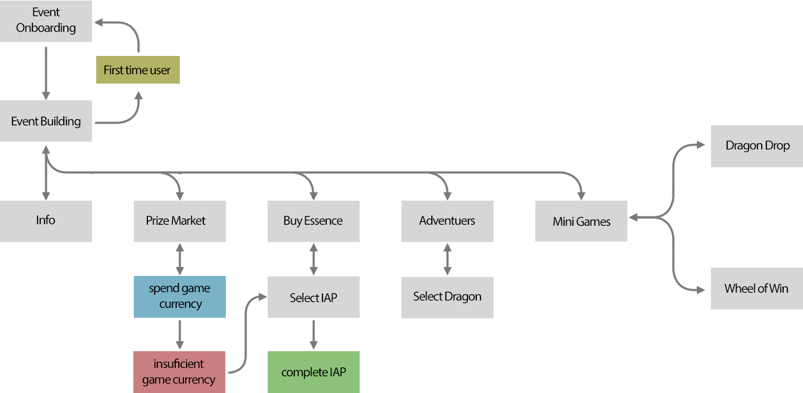
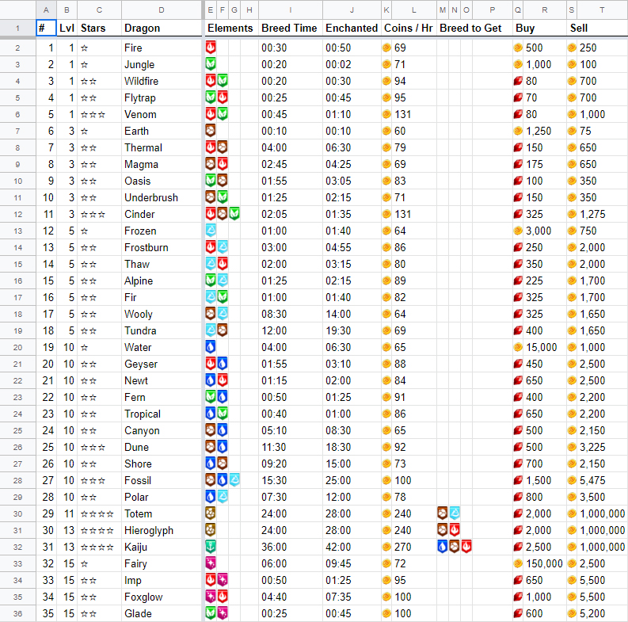
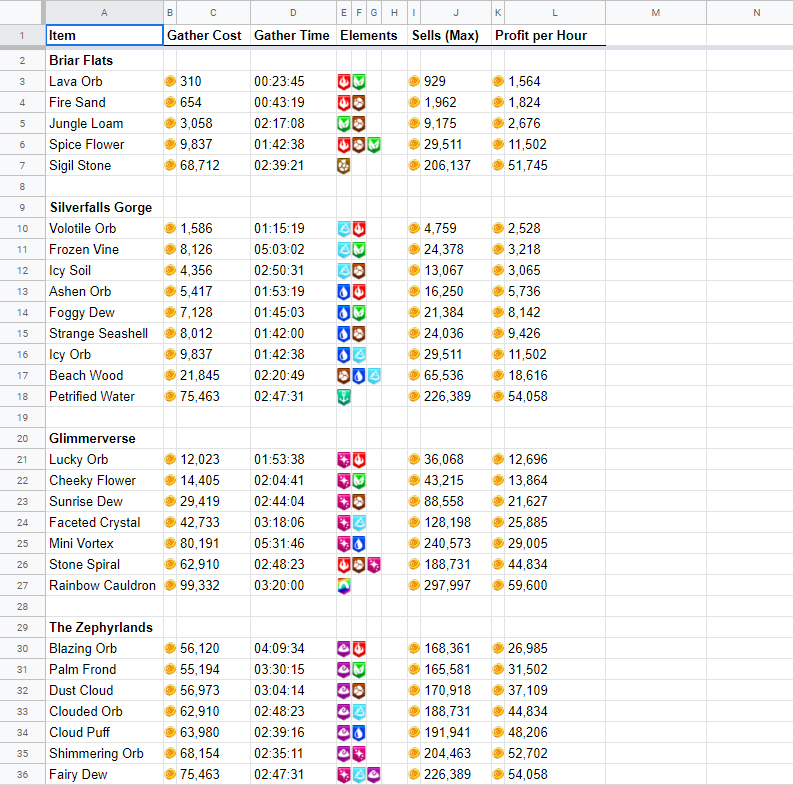

DragonVale World
Overview
DragonVale World was a free-to-play mobile game and the followup to its wildly successful predecessor, DragonVale. We took the ideas and designs of the original DragonVale and further improved upon the overall user experience, onboarding, monetization, and graphical fidelity.
Role
Game design, UX design, Interaction design, User flow, User research, A-B Testing.
I was also the lead designer for the first global event of the proudct, the "Exploration Extravaganza."
I was also the lead designer for the first global event of the proudct, the "Exploration Extravaganza."
Core Loop
The core loop of DragonVale World included the original loop of hatching dragons, feeding them, and then breeding them to collect new dragons.
In DragonVale World we decided to expand on that original loop by giving you more to do with your dragons. One of the main ways we did this was create the loop of gathering. Users would send their dragons out into the world of DragonVale to collect items that they could then craft.
In DragonVale World we decided to expand on that original loop by giving you more to do with your dragons. One of the main ways we did this was create the loop of gathering. Users would send their dragons out into the world of DragonVale to collect items that they could then craft.


Wireframes
One of the ways we increased user engagement was through the use of weekend events. We would give the users a goal such as breed "x" number of dragons before the weekend was over. All screens were wireframed and iterated on in lucid chart to find a layout we were happy with before being handed off to artists to create mockups.


Mockups
Once we were happy with wireframes and layouts we would move into creating mockups. These images were used to get a simple look of different UI elements and how different cards would look on screen. These particular mockups are for the Exploration Extravaganza event.


 



Userflow
This userflow was designed for the Exploration Extravaganza event. It only included steps that were part of the event.

Big Data
The amount of data used to support a free-to-play game such as DragonVale World was enormous. Not only did we have an immense amount of information to balance so the player proceeded through the game at a reasonable pace, but we also received a huge amount of player data that required parsing to determine what steps to take to further improve the game. Tracking this data was largely done in Tableau.


Screenshots